Brief description: the retail_ts dataset is from the Federal Reserve Economic Data (FRED) database. The data contains monthly US retail and food sales with the RSAFS series, which is seasonally adjusted, and the RSAFSNA series, which is not seasonally adjusted. The key is series_id, which identifies the two sales series between RFSAFS and RSAFSNA and time index is Month, which identifies an observation in each month of the year in the data range. The can_gas dataset comes from the fpp3 package with Canadian natural gas production on a monthly basis, measured in billionsssss of cubic meters.
# Load packageslibrary(tidyverse)
Warning: package 'tidyverse' was built under R version 4.5.3
Warning: package 'ggplot2' was built under R version 4.5.3
Warning: package 'tibble' was built under R version 4.5.3
Warning: package 'tidyr' was built under R version 4.5.3
Warning: package 'readr' was built under R version 4.5.3
Warning: package 'purrr' was built under R version 4.5.3
Warning: package 'dplyr' was built under R version 4.5.3
Warning: package 'stringr' was built under R version 4.5.3
Warning: package 'forcats' was built under R version 4.5.3
Warning: package 'lubridate' was built under R version 4.5.3
── Attaching core tidyverse packages ──────────────────────── tidyverse 2.0.0 ──
✔ dplyr 1.2.1 ✔ readr 2.2.0
✔ forcats 1.0.1 ✔ stringr 1.6.0
✔ ggplot2 4.0.2 ✔ tibble 3.3.1
✔ lubridate 1.9.5 ✔ tidyr 1.3.2
✔ purrr 1.2.2
── Conflicts ────────────────────────────────────────── tidyverse_conflicts() ──
✖ dplyr::filter() masks stats::filter()
✖ dplyr::lag() masks stats::lag()
ℹ Use the conflicted package (<http://conflicted.r-lib.org/>) to force all conflicts to become errors
library(fpp3)
Warning: package 'fpp3' was built under R version 4.5.3
Rows: 417 Columns: 3
── Column specification ────────────────────────────────────────────────────────
Delimiter: ","
dbl (2): RSAFS, RSAFSNA
date (1): observation_date
ℹ Use `spec()` to retrieve the full column specification for this data.
ℹ Specify the column types or set `show_col_types = FALSE` to quiet this message.
# A tibble: 12 × 2
month avg_volume
<ord> <dbl>
1 Jan 17.0
2 Feb 15.3
3 Mar 16.3
4 Apr 15.7
5 May 15.7
6 Jun 14.9
7 Jul 15.6
8 Aug 15.6
9 Sep 15.1
10 Oct 16.2
11 Nov 16.2
12 Dec 17.1
#Answer 2.6b: December has highest production at an average volume of 17.1, while June has the lowest at 14.9.
# A tsibble: 6 x 7 [1M]
Month Volume year month quarter next_month same_month_last_year
<mth> <dbl> <dbl> <ord> <int> <mth> <mth>
1 1990 Jan 12.5 1990 Jan 1 1990 Feb 1989 Jan
2 1990 Feb 11.2 1990 Feb 1 1990 Mar 1989 Feb
3 1990 Mar 11.6 1990 Mar 1 1990 Apr 1989 Mar
4 1990 Apr 11.1 1990 Apr 2 1990 May 1989 Apr
5 1990 May 11.0 1990 May 2 1990 Jun 1989 May
6 1990 Jun 10.1 1990 Jun 2 1990 Jul 1989 Jun
#Answer to 2.6d: We use sum()instead of mean() because we want the total volume (production) for the quarter, not the average for each quarter. Also it does still seem to be seasonal, as Q1 and Q4 are always highest which points to higher production during the months in those quarters.
#2.7 Plotting with autoplot()
#2.7a Plot
retail_ts |>autoplot(sales)
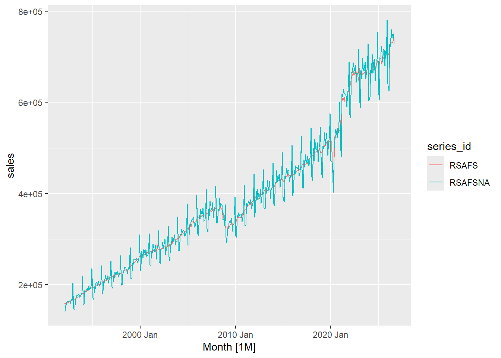
#2.7b Plot
retail_ts |>autoplot(sales) +labs(title ="U.S. Retail and Food Services Sales",subtitle ="Seasonally adjusted vs. not seasonally adjusted",x =NULL, y ="Millions of dollars", color =NULL ) +theme_minimal()
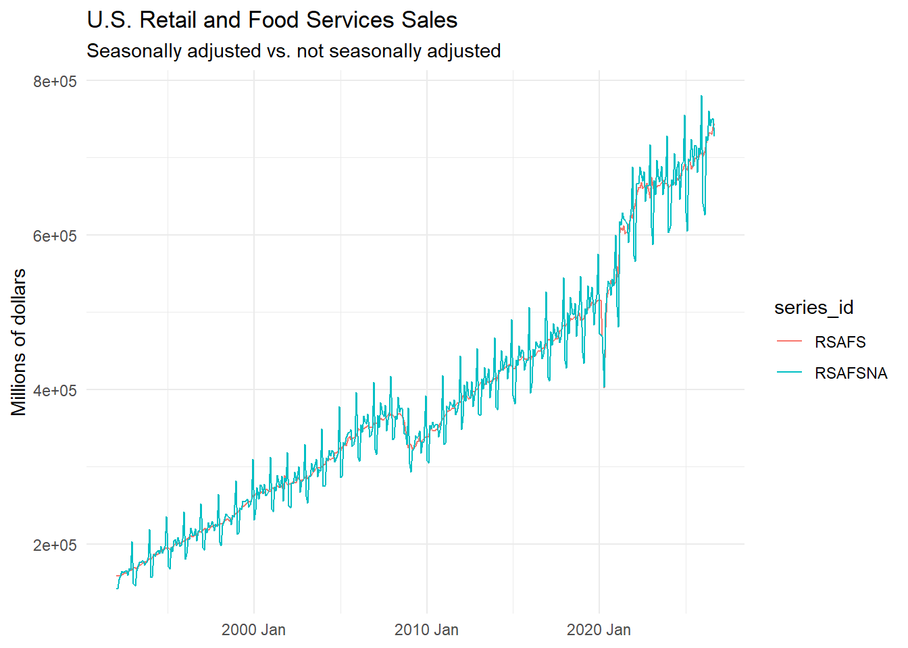
#Answer to 2.7b: Right around January of 2010 and 2020 there seems to be a steep drop in both the SA and NSA lines. The two series generally follow the same path but NSA is less smooth, and had steeper drops during the near January holiday season than SA did.
`geom_smooth()` using method = 'loess' and formula = 'y ~ x'
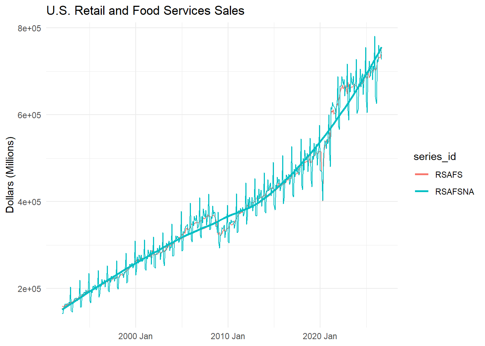
#Answer to 2.7d: I choose the retail_ts with geom_smooth to show more clearly the trends in retail sales and visualize the difference when there are steep drops.
2. Transformations
#Answer to 3.1a: No, the seasonal swings do not get larger as the series grows, the swings seem the change in a different way. Generally, the graph is increasing and most swings seem unrelated to a seasonal explantion.
#3.1b Log Volume
can_gas <- can_gas |>mutate(log_volume =log(Volume))can_gas |>autoplot(log_volume) +labs(title ="Canadian Natural Gas Production (Log)",x =NULL,y ="Log of Production Volume" ) +theme_minimal()
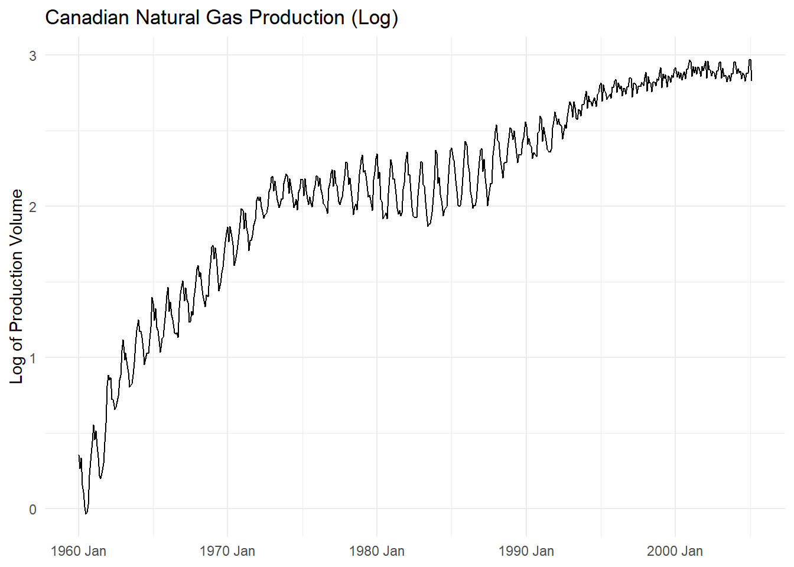
#Answer to 3.1b: The shape became more curved, and seasonal swings became more consistant. The log didn’t make the series fully linear because you can still sees changes in growth rate at the same periods as the original plot. I think it helped with variance but maybe has some other factors that logging can’t fully solve.
#Answer to 3.1c: I think the case for logging is stronger because the logged version seems to make the season swings seen in the level plot more constant overtime.
Warning: Removed 1 row containing missing values or values outside the scale range
(`geom_line()`).
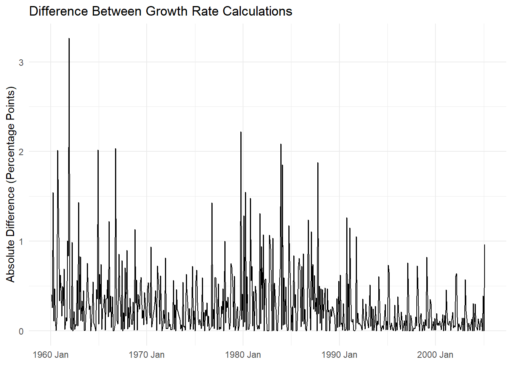
#Anwser to 3.2a: Mostly accurate, but there are certain months especially around January that are still less accurate due to bigger changes in production presembly during that time.
#3.3 SA vs. NSA Growth Rates
retail_ts <- retail_ts |>group_by_key() |>mutate(growth_mom =100*difference(log(sales))) |>ungroup()retail_ts |>autoplot(growth_mom) +labs(title ="Month-over-Month Growth: SA vs. NSA Retail Sales",x =NULL, y ="Growth rate (%)", color =NULL ) +theme_minimal()
Warning: Removed 2 rows containing missing values or values outside the scale range
(`geom_line()`).
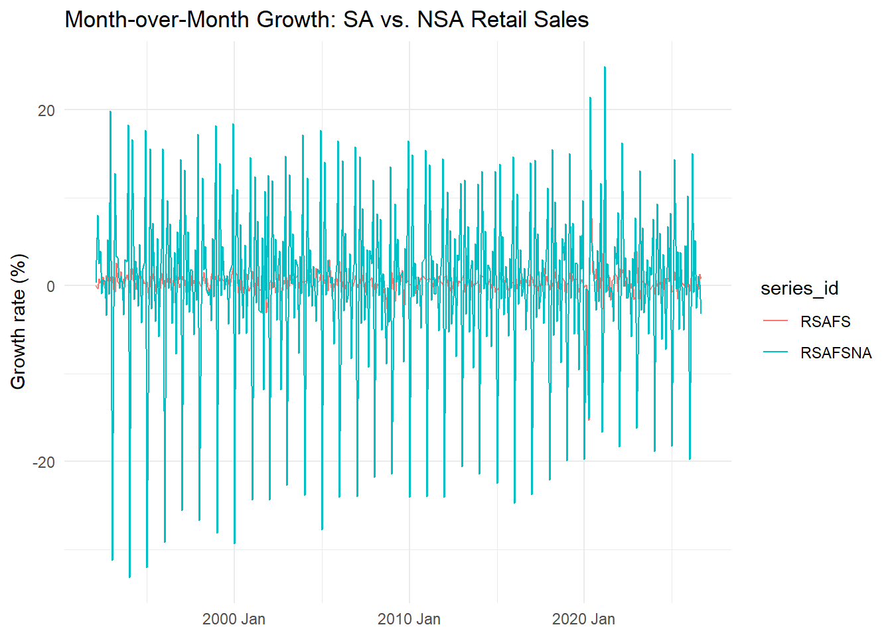
#Answer to 3.3: Month to month, the NSA is wayyy nosier than the SA series with huger swings and spaced out spikes pointing to seasonal behavior. NSA has not been seasonally adjusted, while SA has been adjusted to removee calender effects, which are effects due to number of days in a month, and general holiday patterns. This is similar to 2.7c, where SA was smoother than NSA, which had generally more fluctuating.
retail_ts |>filter(series_id =="RSAFS") |>gg_season(sales) +labs(title ="Seasonal Pattern in SA Retail Sales",y ="Dollars (millions)" ) +theme_minimal()
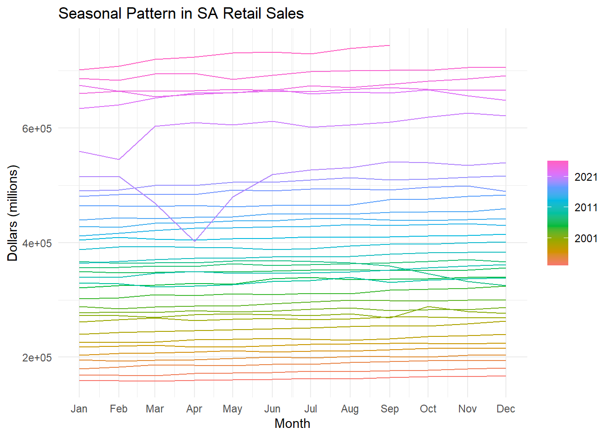
#Answer to 4.1b: The SA plot is straighter than the NSA plot due to it’s adjustments, which bends upwards towards the end and has more pronounced ups and downs.
#Canadian Gas Plot
can_gas |>gg_season(log_volume) +labs(title ="Seasonal Pattern in Canadian Natural Gas Production",y ="Log of Production Volume" ) +theme_minimal()
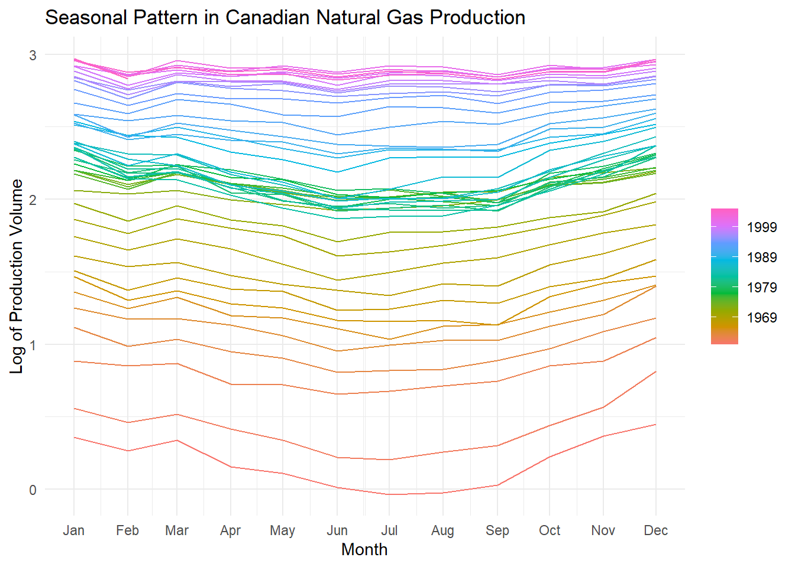
#Answer to 4.1c: The lines seem to bend down, revealing that the tails ends such as January and December having higher production most likely due to those being colder months requiring heat, while predictalby, the summer months such as June, July, and August have the least since the are the warmest.
#4.2 gg_subseries() – A Subseries Plot
can_gas |>gg_subseries(log_volume) +labs(title ="Subseries Plot: Canadian Gas Production",y ="log(Volume)" )
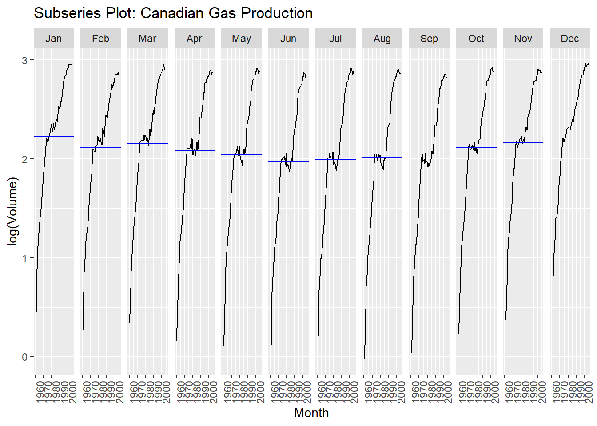
#4.3 Seasonally Adjusting a Series with X-13ARIMA-SEATS
#4.3a ARIMA
install.packages("seasonal")
Warning: package 'seasonal' is in use and will not be installed
#Answer to 4.3a: The highest seasonal factor hits at 1.2 or 20% above trend, and I believe that month is meant to be December, which makes sense because of the holiday season. The seasonality swings however seem fairly consistant overtime.
#Answer to 4.3b: It seems to match the official one pretty fairly, staying within -0.5 to 0.5 in differences. The exception being a few years after 2020, which makes sense since sales were affected during the pandemic and years after due to finicial difficulties.
#4.4 A Simple Model – Linear Trend + Seasonal Dummies
#Answer to 4.4a: Coefficent is 0.003973 x 100 (because of LOG) which = a 0.3973% growth rate for gas. June with 4.777 has the most significant seasonal effect.
#4.4b Fitted Values
can_gas_fit |>augment() |>ggplot(aes(x = Month)) +geom_line(aes(y = log_volume, color ="Actual")) +geom_line(aes(y = .fitted, color ="Fitted")) +labs(title ="Linear Trend + Seasonal Dummies Fit: Canadian Gas Production",y ="log(Volume)", color =NULL) +theme_minimal()
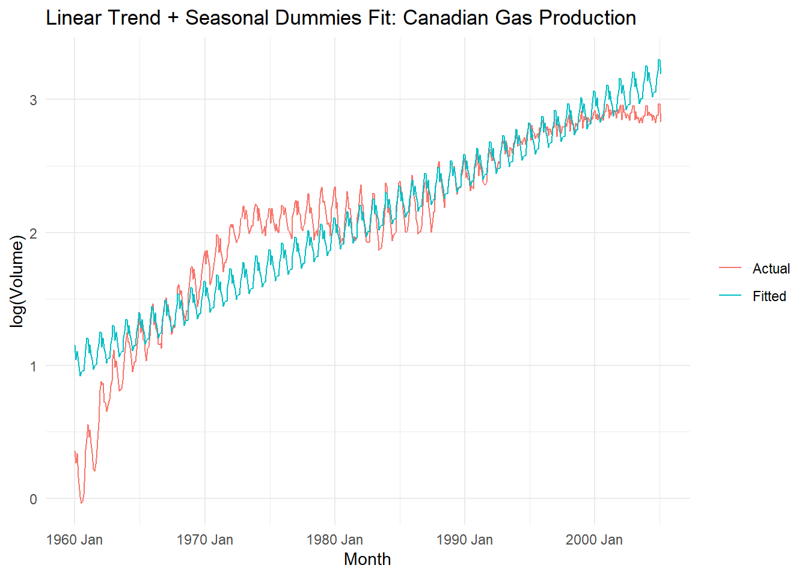
#Answer to 4.4b: The actual line is curved, so the fitted line misses most of the data, only capturing the center and tail end for the most part.
#4.4c White Noise Check
can_gas_fit |>gg_tsresiduals()
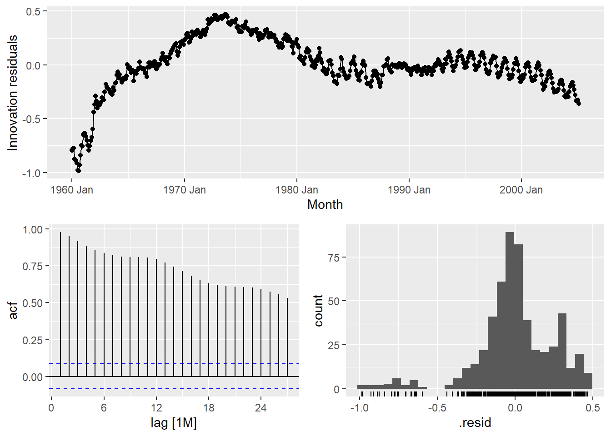
can_gas_fit |>augment() |>features(.innov, ljung_box, lag =24)
#Answer to 4.4c: Resisudals do not look like just white noise, there is visible structure in the lags. With a reported p-value of 0, which is < the significance level 0.05, we reject the null hypothesis menaing residuals still have signs of autocorrelation.
Warning: The future dataset is incomplete, incomplete out-of-sample data will be treated as missing.
1 observation is missing at 2005 Mar
# A tibble: 2 × 4
.model .type MAE RMSE
<chr> <chr> <dbl> <dbl>
1 snaive Test 0.562 0.702
2 tslm Test 4.01 4.36
#Answer to 5.1: The first forecast evaluated was in January, 1980, and the last forecast evaluated was in Feburary, 2005 (a month after I was born!). The seasonal random walk had MAE = 0.562 and RMSE = 0.702, while the linear trend + Seasonal dummies model had MAE = 4.01 and RMSE = 4.36. #Seasonal random walk has smaller forecast errors, so both metrics show SNAIVE was more accurate.
#5.2 Is the Difference Significant?
errs <- gas_cv_fc |>as_tibble() |>left_join(as_tibble(can_gas) |>select(Month, actual = Volume),by ="Month") |>mutate(e = actual - .mean) |>select(Month, .model, e) |>pivot_wider(names_from = .model, values_from = e) |>na.omit()forecast::dm.test(errs$snaive, errs$tslm, h =1, power =1)
Diebold-Mariano Test
data: errs$snaiveerrs$tslm
DM = -31.278, Forecast horizon = 1, Loss function power = 1, p-value <
2.2e-16
alternative hypothesis: two.sided
#Answer to 5.2: The DM statistic is -31.278, and the p-value is very small, appromently 0. The p-value is < the significance level of 0.05, thus we reject the null hypothesis that both models have equal forecast accuracy. -31.278 means that the SNAIVE has smaller forecast errors than the tslm.
Warning: The future dataset is incomplete, incomplete out-of-sample data will be treated as missing.
1 observation is missing at 2005 Mar
# A tibble: 2 × 4
.model .type MAE RMSE
<chr> <chr> <dbl> <dbl>
1 snaive Test 0.562 0.702
2 tslm Test 2.09 2.42
#Answer to 5.3: The seasonal random walk had MAE = 0.562 and RMSE = 0.702 (same as 5.1a), while the linear trend + dummies model had MAE = 2.09 and RMSE = 2.42. TSLM changed while SNAIVE remained the same, showing that likely TSLM benefits from more recent data while older data used in expanding windows bogged it down. Comparing this to the fitted values in 4.4b, tslm struggles with capturing trends within a whole time period, and seems to perform better with recent data.
5. Reflection
In the residual check in Part 4.4c, we saw through the Ljung–Box test and residual patterns that there was still autocorrelation. The residuals checked out as being not just white noise, and the Box test allowed us to reject the null that there was no signs of autocorrelation. The model most likely is missing patterns that can’t be summized by our current model’s adjustments for seasonal effects. We saw the seasonal random walk perform better than the tslm which tells me that there are superior models to consider.
Thank you for a fun problem set! I was confused by some elements of inclusion in the qurto but will talk to you in office hours! -Amber
AI USE: I used AI for assitance in formatting and git-hub, but swear that any help I recieved i understood what I was putting in.